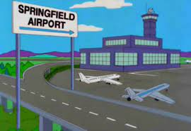
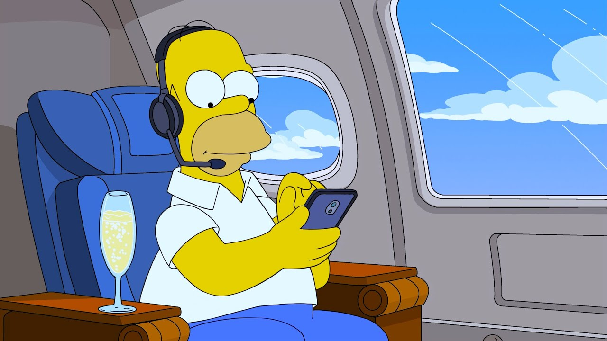

// homero llega al aropuerto y se va de viaje... continuacion de tarde 1 opcion a
// temprano 1 opcion a
Temprano me logro ir de vacaciones
Logramos llegar al aropuerto...

aeropuerto de springfield
Hago el check-in para mi viaje

estoy en mi asiento listo para despegar...